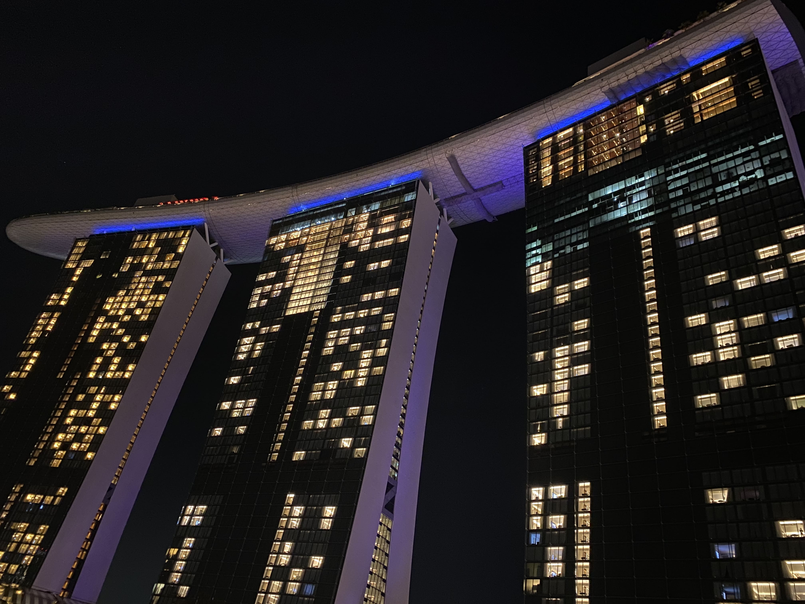
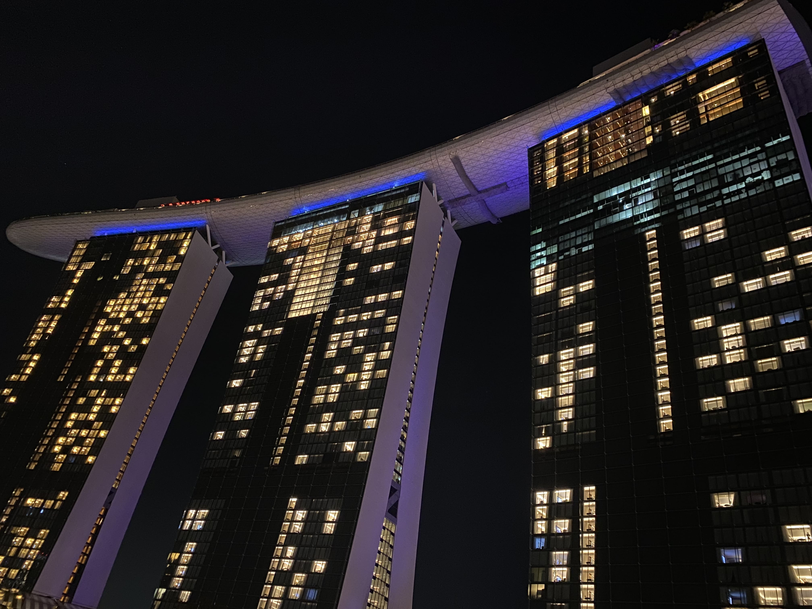

Amelie Casters
Hello, I'm Amélie. I'm currently studying International Sport and Event Management at Kedge Business School in Marseille. I am passionate about football and outdoor adventures.
Age: 24
Date of Birth: 25.11.1999
Nationality: French & German
My favorite Song:
Professional Experiences
- Content Lead, Teamsports.ai
- Sales, 11teamsports, Nike
- Season 2021/2022 and 2022/2023 Volunteer, Foundation of 1. FC Köln
- Market Research & Online Monitoring, Nielsen Sports
- European Academy of Sports
Interests
Football
Travel & Outdoor

 
